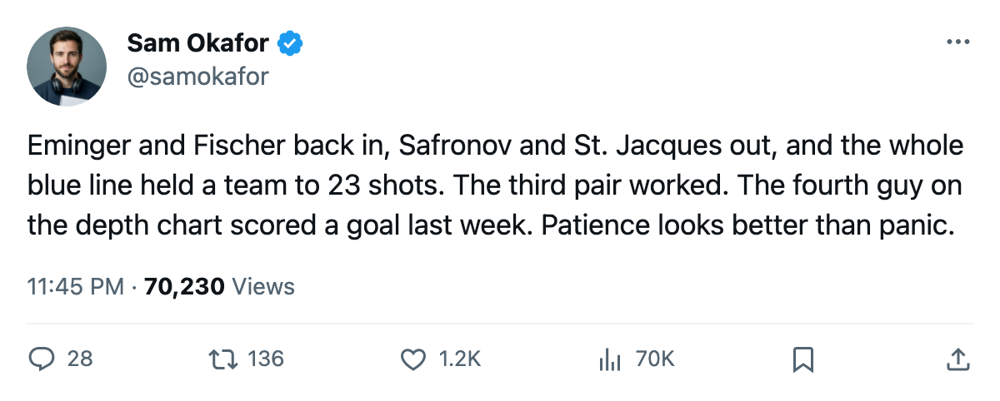

TOR
TORLeafs Practice Notes: The blue line that blanked St. Louis, by the numbers
Eminger and Fischer came back in, Safronov and St. Jacques came out, and the result was 23 shots against. The shuffle worked on the first night.
 Sam OkaforLeafs beat reporter · Queen City Telegram
Sam OkaforLeafs beat reporter · Queen City Telegram
The blue line that started Tuesday against  St. Louis Blues carried two names that had not skated in a Toronto sweater since before the last edition. Steve Eminger82 and
St. Louis Blues carried two names that had not skated in a Toronto sweater since before the last edition. Steve Eminger82 and  Jiri Fischer84 went from undressed to the lineup.
Jiri Fischer84 went from undressed to the lineup.  Kirill Safronov68 and
Kirill Safronov68 and  Bruno St. Jacques66 went the other way.
Bruno St. Jacques66 went the other way.
The result was 7-0, with St. Louis Blues managing 23 shots in 60 minutes against a blue line that has allowed 73 goals in 34 games this season. The 23 shots is the fewest Toronto has allowed in any game where the sheet records a shot total.
 Rostislav Klesla87 and
Rostislav Klesla87 and  Barret Jackman86 carry the top pairing at 25.9 and 25.2 minutes a night.
Barret Jackman86 carry the top pairing at 25.9 and 25.2 minutes a night.  Tomas Kaberle85 at 21.3 and
Tomas Kaberle85 at 21.3 and  Bryan McCabe84 at 15.4 split the second pair when both are healthy, though McCabe has only 9 games and Kaberle only 15. That opens the third slot for Eminger at 19.6 and Fischer at 19.4.
Bryan McCabe84 at 15.4 split the second pair when both are healthy, though McCabe has only 9 games and Kaberle only 15. That opens the third slot for Eminger at 19.6 and Fischer at 19.4.
The two who sat had numbers that made the call easy. Safronov, 24 years old with an 82 overall base and a 68 reading on the current Book, had 20 games and 8 points on a $0.90M deal. St. Jacques, 25, at 66 overall, had 15 games, 0 points, and 12.2 minutes. Neither carried a form term on the Bureau's Development Index risers or fallers.
| player | age | overall | GP | pts | mpg | dressed |
|---|---|---|---|---|---|---|
| Rostislav Klesla | 23 | 87 | 34 | 15 | 25.9 | Yes |
| Barret Jackman | 24 | 86 | 34 | 22 | 25.2 | Yes |
| Tomas Kaberle | 27 | 85 | 15 | 7 | 21.3 | Yes |
| Jiri Fischer | 25 | 84 | 7 | 4 | 19.4 | Yes |
| Steve Eminger | 22 | 82 | 8 | 4 | 19.6 | Yes |
| Bryan McCabe | 30 | 84 | 9 | 2 | 15.4 | Yes |
| Kirill Safronov | 24 | 68 | 20 | 8 | 20.1 | No |
| Bruno St. Jacques | 25 | 66 | 15 | 0 | 12.2 | No |
Eminger is 22 with an 82 overall and a 99 potential. Fischer is 25 at 84 with a 90. Neither appears on the Development Index risers, which means the form is holding steady rather than climbing. Tuesday's blanking does not change that. A single shutout on 23 shots against a club that was L1 going into the game tells us the coaching staff was willing to trust the bottom pair, and the bottom pair was up to the job.
Carlo Colaiacovo76, 22, at 76 overall and 25 games with 3 points, and Andreas Stahle76, 21, at 76 and 18 games with 4 points, remain healthy scratches. The pipeline is three deep behind six. The 7-0 keeps everyone patient for now.
Toronto hosts  Atlanta Thrashers on 2005-12-23 at the Air Canada Centre. The series reads 2-0-0, 10-5 in goals. Atlanta Thrashers arrives on a 3-game losing streak at 9-17-3.
Atlanta Thrashers on 2005-12-23 at the Air Canada Centre. The series reads 2-0-0, 10-5 in goals. Atlanta Thrashers arrives on a 3-game losing streak at 9-17-3.
